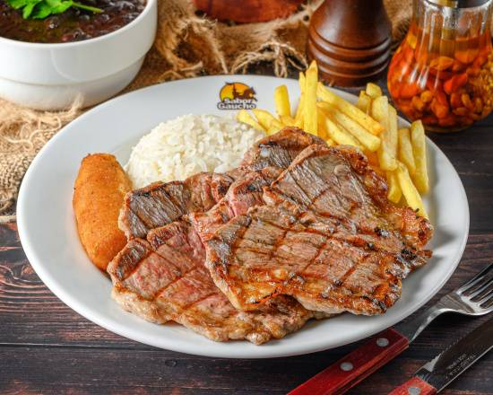
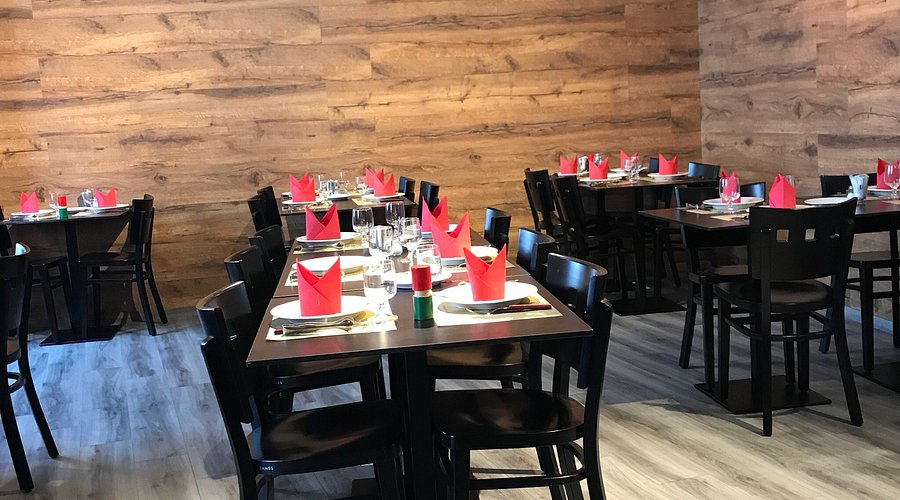

A Famosa Picanha
A picanha do Sabor Gaúcho é selecionada de forma rigorosa, grelhada na pedra ou na brasa e servida no ponto ideal. É o prato mais procurado do restaurante e a estrela do menu.



Picanha tradicional brasileira em Portugal
Fundado com o objetivo de trazer os sabores autênticos do churrasco brasileiro, o Sabor Gaúcho tornou-se referência em Portugal pela qualidade da carne, ambiente acolhedor e tradição gaúcha.
A casa destaca-se principalmente pela sua famosa picanha preparada ao estilo tradicional, servida com acompanhamentos clássicos como arroz, feijão preto, farofa e vinagrete.
A picanha do Sabor Gaúcho é selecionada de forma rigorosa, grelhada na pedra ou na brasa e servida no ponto ideal. É o prato mais procurado do restaurante e a estrela do menu.
O Sabor Gaúcho possui unidades nas seguintes cidades de Portugal: